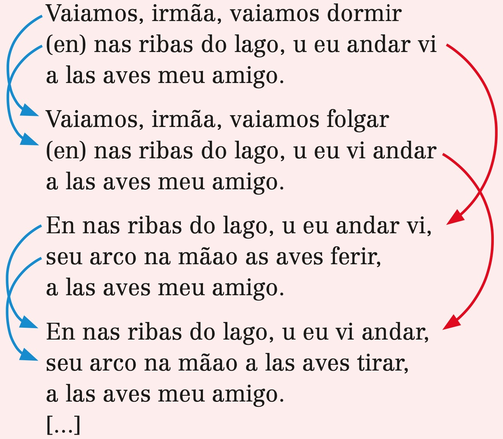

📗 O Cortiço
Texto de Martim Codex
À esquerda está a versão em galego-português e à direita, em português moderno.
Ondas do mar de Vigo1,
se vistes meu amigo2!
e ai Deus, se verrá cedo!
Ondas do mar levado,
se vistes meu amado!
e ai Deus, se verrá cedo!
Se vistes meu amigo,
o por que eu sospiro!
e ai Deus, se verrá cedo!
Se vistes meu amado
por que ei gram cuidado!
e ai Deus, se verrá cedo!
Ai ondas do mar de Vigo,
se vistes o meu amigo,
dizei-me: voltará cedo?
Ondas do mar levantado
se vistes o meu amado,
dizei-me: voltará cedo?
Se vistes o meu amigo,
aquele por quem suspiro
dizei-me: voltará cedo?
Se vistes o meu amado,
que me pôs neste cuidado,
dizei-me: voltará cedo?
- Submissão absoluta à dama.
- Vassalagem humilde e paciente.
- Promessa de honrar e servir a dama com fidelidade.
- Prudência para não abalar a reputação da dama, sendo o cavaleiro, por essa razão, proibido de falar diretamente dos sentimentos que tem por ela.
- A amada é vista como a mais bela de todas as mulheres.
- Pela amada o trovador despreza todos os títulos, as riquezas e a posse de todos os impérios.
Na Idade Média, poucas pessoas sabiam ler. As cantigas eram cantadas e dançadas, e os paralelismos contribuíam para a memorização do texto.
Além do refrão, as cantigas de amigo costu- mam apresentar dois tipos de paralelismo: o de par de estrofes e o leixa-pren. O de par de estrofes consiste na repetição de duas estrofes com uma ligeira diferença entre o verso de uma e o seu cor- respondente na outra estrofe. O leixa-pren é uma espécie de encadeamento entre estrofes pares e ímpares: o segundo verso da primeira estrofe se repete no primeiro da terceira estrofe, o segundo verso da segunda estrofe se repete no primeiro da quarta estrofe, e assim por diante.
Veja os dois tipos de paralelismo nos versos seguintes. As setas em azul correspondem ao pa- ralelismo de par de estrofes, e as setas em verme- lho, ao leixa-pren:
Vaiamos, irmãa, vaiamos dormir
(en) nas ribas do lago, u eu andar vi
a las aves meu amigo.
Vaiamos, irmãa, vaiamos folgar
(en) nas ribas do lago, u eu vi andar
a las aves meu amigo.
En nas ribas do lago, u eu andar vi,
seu arco na mãao as aves ferir,
a las aves meu amigo.
En nas ribas do lago, u eu vi andar,
seu arco na mãao a las aves tirar,
a las aves meu amigo.
[…]

(Fernando Esguio. In: Segismundo Spina. A lírica trovadoresca. Rio de Janeiro: Grifo; São Paulo: Edusp, 1972. p. 369.)
Um homem ajoelha-se na frente de outro ho- mem, une as duas mãos e as coloca nas mãos da- quele que está em pé à sua frente. Enquanto isso acontece, o primeiro diz algumas palavras e se re- conhece como o “homem” do outro homem. Depois, beijam-se na boca e estabelece-se um acordo e uma amizade “civil”, o primeiro jovem jura sobre os Evan- gelhos ser fiel ao segundo por toda sua existência.
Quem acha isto meio “estranho”, fique sa- bendo que este ritual forneceu uma das principais bases ao sistema feudal: os funcionários reais, os oficiais de todas as classes, os clérigos e até mes- mo alguns camponeses passavam por ele antes de assumirem suas funções. Com ele, tornavam-se vassalos de seus senhores.
Essas relações todas podem ser explicadas pela necessidade de garantir fidelidade, assegurar prestação de serviços ou o pagamento de tributos, impor penalidades aos que não cumprissem suas obrigações de dependência.
(Paulo Miceli. O feudalismo. São Paulo: Atual, 1988. p. 35-6.)
Mídias
Vídeos
O CORTIÇO, DE ALUÍSIO AZEVEDO (#20)
Uma análise sobre o clássico brasileiro do naturalismo - O Cortiço de Aluísio Azevedo
Literatura - O Cortiço - Aluísio de Azevedo - Laura Camilo dos Santos Cruz